<!DOCTYPE html>


  <html class="light page-post">


<head><meta name="generator" content="Hexo 3.9.0">
  <meta charset="utf-8">
  
  <title>微机原理与系统设计上机作业 | LittleGhost&#39;s Blog</title>

  <meta name="viewport" content="width=device-width, initial-scale=1, maximum-scale=1">

  
    <meta name="keywords" content="微机原理,">
  

  <meta name="description" content="实验一 EMU8086使用及指令系统熟悉实验要求 熟悉并掌握EMU8086 汇编语言调试环境； 学习8086的指令系统，输入简单的指令，观察各寄存器、内存相关单元以及处理器标志位的变化（数据传送类指令，算数运算类指令，逻辑运算类指令，标志处理和CPU控制类指令，移位和循环移位类指令，处理器控制类指令等，要求每类指令至少一个用例。具体用例自行设计，可参考教材用例）； 学习汇编语言程序设计的基本步骤和">
<meta name="keywords" content="微机原理">
<meta property="og:type" content="article">
<meta property="og:title" content="微机原理与系统设计上机作业">
<meta property="og:url" content="https://littleghost2016.github.io/2017/05/23/微机原理与系统设计上机作业/index.html">
<meta property="og:site_name" content="LittleGhost&#39;s Blog">
<meta property="og:description" content="实验一 EMU8086使用及指令系统熟悉实验要求 熟悉并掌握EMU8086 汇编语言调试环境； 学习8086的指令系统，输入简单的指令，观察各寄存器、内存相关单元以及处理器标志位的变化（数据传送类指令，算数运算类指令，逻辑运算类指令，标志处理和CPU控制类指令，移位和循环移位类指令，处理器控制类指令等，要求每类指令至少一个用例。具体用例自行设计，可参考教材用例）； 学习汇编语言程序设计的基本步骤和">
<meta property="og:locale" content="zh-Hans">
<meta property="og:image" content="https://littleghost2016.github.io/2017/05/23/微机原理与系统设计上机作业/clip_image002.jpg">
<meta property="og:image" content="https://littleghost2016.github.io/2017/05/23/微机原理与系统设计上机作业/clip_image004.jpg">
<meta property="og:image" content="https://littleghost2016.github.io/2017/05/23/微机原理与系统设计上机作业/clip_image006.jpg">
<meta property="og:image" content="https://littleghost2016.github.io/2017/05/23/微机原理与系统设计上机作业/clip_image008.jpg">
<meta property="og:image" content="https://littleghost2016.github.io/2017/05/23/微机原理与系统设计上机作业/clip_image010.jpg">
<meta property="og:image" content="https://littleghost2016.github.io/2017/05/23/微机原理与系统设计上机作业/clip_image012.jpg">
<meta property="og:image" content="https://littleghost2016.github.io/2017/05/23/微机原理与系统设计上机作业/clip_image014.jpg">
<meta property="og:image" content="https://littleghost2016.github.io/2017/05/23/微机原理与系统设计上机作业/clip_image016.jpg">
<meta property="og:image" content="https://littleghost2016.github.io/2017/05/23/微机原理与系统设计上机作业/clip_image018.jpg">
<meta property="og:image" content="https://littleghost2016.github.io/2017/05/23/微机原理与系统设计上机作业/clip_image020.jpg">
<meta property="og:image" content="https://littleghost2016.github.io/2017/05/23/微机原理与系统设计上机作业/clip_image022.jpg">
<meta property="og:image" content="https://littleghost2016.github.io/2017/05/23/微机原理与系统设计上机作业/clip_image024.jpg">
<meta property="og:image" content="https://littleghost2016.github.io/2017/05/23/微机原理与系统设计上机作业/clip_image026.jpg">
<meta property="og:image" content="https://littleghost2016.github.io/2017/05/23/微机原理与系统设计上机作业/clip_image028.jpg">
<meta property="og:image" content="https://littleghost2016.github.io/2017/05/23/微机原理与系统设计上机作业/clip_image030.jpg">
<meta property="og:image" content="https://littleghost2016.github.io/2017/05/23/微机原理与系统设计上机作业/clip_image032.jpg">
<meta property="og:image" content="https://littleghost2016.github.io/2017/05/23/微机原理与系统设计上机作业/clip_image034.jpg">
<meta property="og:image" content="https://littleghost2016.github.io/2017/05/23/微机原理与系统设计上机作业/clip_image036.jpg">
<meta property="og:image" content="https://littleghost2016.github.io/2017/05/23/微机原理与系统设计上机作业/clip_image002-1585749590672.jpg">
<meta property="og:image" content="https://littleghost2016.github.io/2017/05/23/微机原理与系统设计上机作业/clip_image004-1585749590673.jpg">
<meta property="og:image" content="https://littleghost2016.github.io/2017/05/23/微机原理与系统设计上机作业/clip_image006-1585749590673.jpg">
<meta property="og:image" content="https://littleghost2016.github.io/2017/05/23/微机原理与系统设计上机作业/clip_image008-1585749590673.jpg">
<meta property="og:image" content="https://littleghost2016.github.io/2017/05/23/微机原理与系统设计上机作业/clip_image010-1585749590673.jpg">
<meta property="og:image" content="https://littleghost2016.github.io/2017/05/23/微机原理与系统设计上机作业/clip_image012-1585749590673.jpg">
<meta property="og:image" content="https://littleghost2016.github.io/2017/05/23/微机原理与系统设计上机作业/clip_image014-1585749590673.jpg">
<meta property="og:image" content="https://littleghost2016.github.io/2017/05/23/微机原理与系统设计上机作业/clip_image016-1585749590673.jpg">
<meta property="og:image" content="https://littleghost2016.github.io/2017/05/23/微机原理与系统设计上机作业/clip_image002-1585753062049.jpg">
<meta property="og:image" content="https://littleghost2016.github.io/2017/05/23/微机原理与系统设计上机作业/clip_image004-1585753062050.jpg">
<meta property="og:image" content="https://littleghost2016.github.io/2017/05/23/微机原理与系统设计上机作业/clip_image006-1585753062051.jpg">
<meta property="og:image" content="https://littleghost2016.github.io/2017/05/23/微机原理与系统设计上机作业/clip_image008-1585753062051.jpg">
<meta property="og:image" content="https://littleghost2016.github.io/2017/05/23/微机原理与系统设计上机作业/clip_image010-1585753062051.jpg">
<meta property="og:image" content="https://littleghost2016.github.io/2017/05/23/微机原理与系统设计上机作业/clip_image012-1585753062056.jpg">
<meta property="og:image" content="https://littleghost2016.github.io/2017/05/23/微机原理与系统设计上机作业/clip_image002-1585753322496.jpg">
<meta property="og:image" content="https://littleghost2016.github.io/2017/05/23/微机原理与系统设计上机作业/clip_image004-1585753322497.jpg">
<meta property="og:image" content="https://littleghost2016.github.io/2017/05/23/微机原理与系统设计上机作业/clip_image006-1585753322499.jpg">
<meta property="og:updated_time" content="2020-04-01T15:17:11.225Z">
<meta name="twitter:card" content="summary">
<meta name="twitter:title" content="微机原理与系统设计上机作业">
<meta name="twitter:description" content="实验一 EMU8086使用及指令系统熟悉实验要求 熟悉并掌握EMU8086 汇编语言调试环境； 学习8086的指令系统，输入简单的指令，观察各寄存器、内存相关单元以及处理器标志位的变化（数据传送类指令，算数运算类指令，逻辑运算类指令，标志处理和CPU控制类指令，移位和循环移位类指令，处理器控制类指令等，要求每类指令至少一个用例。具体用例自行设计，可参考教材用例）； 学习汇编语言程序设计的基本步骤和">
<meta name="twitter:image" content="https://littleghost2016.github.io/2017/05/23/微机原理与系统设计上机作业/clip_image002.jpg">

  

  
    <link rel="icon" href="https://avatars2.githubusercontent.com/u/22980536?s=460&v=4">
  

  <link href="/css/styles.css?v=c114cbeddx" rel="stylesheet">


  
    <link rel="stylesheet" href="/css/personal-style.css">
  

  

  

  


  
    <script async src="https://busuanzi.ibruce.info/busuanzi/2.3/busuanzi.pure.mini.js"></script>
    <link rel="stylesheet" href="//cdn.bootcss.com/font-awesome/4.3.0/css/font-awesome.min.css">
  

</head>
</html>
<body>


  
    <span id="toolbox-mobile" class="toolbox-mobile">盒子</span>
  

  <div class="post-header CENTER">
   
  <div class="toolbox">
    <a class="toolbox-entry" href="/">
      <span class="toolbox-entry-text">盒子</span>
      <i class="icon-angle-down"></i>
      <i class="icon-home"></i>
    </a>
    <ul class="list-toolbox">
      
        <li class="item-toolbox">
          <a
            class="CIRCLE"
            href="/archives/"
            rel="noopener noreferrer"
            target="_self"
            >
            文章
          </a>
        </li>
      
        <li class="item-toolbox">
          <a
            class="CIRCLE"
            href="/category/"
            rel="noopener noreferrer"
            target="_self"
            >
            分类
          </a>
        </li>
      
        <li class="item-toolbox">
          <a
            class="CIRCLE"
            href="/tag/"
            rel="noopener noreferrer"
            target="_self"
            >
            标签
          </a>
        </li>
      
        <li class="item-toolbox">
          <a
            class="CIRCLE"
            href="/link/"
            rel="noopener noreferrer"
            target="_self"
            >
            友链
          </a>
        </li>
      
        <li class="item-toolbox">
          <a
            class="CIRCLE"
            href="/about/"
            rel="noopener noreferrer"
            target="_self"
            >
            关于我
          </a>
        </li>
      
        <li class="item-toolbox">
          <a
            class="CIRCLE"
            href="/search/"
            rel="noopener noreferrer"
            target="_self"
            >
            搜索
          </a>
        </li>
      
    </ul>
  </div>


</div>


  <div id="toc" class="toc-article">
    <strong class="toc-title">文章目录</strong>
    <ol class="toc"><li class="toc-item toc-level-1"><a class="toc-link" href="#实验一-EMU8086使用及指令系统熟悉"><span class="toc-text">实验一 EMU8086使用及指令系统熟悉</span></a><ol class="toc-child"><li class="toc-item toc-level-2"><a class="toc-link" href="#实验要求"><span class="toc-text">实验要求</span></a></li><li class="toc-item toc-level-2"><a class="toc-link" href="#实验目的"><span class="toc-text">实验目的</span></a></li><li class="toc-item toc-level-2"><a class="toc-link" href="#实验内容"><span class="toc-text">实验内容</span></a><ol class="toc-child"><li class="toc-item toc-level-3"><a class="toc-link" href="#一、书本指令用例调试"><span class="toc-text">一、书本指令用例调试</span></a></li><li class="toc-item toc-level-3"><a class="toc-link" href="#二、编写一个简单的程序"><span class="toc-text">二、编写一个简单的程序</span></a><ol class="toc-child"><li class="toc-item toc-level-4"><a class="toc-link" href="#代码"><span class="toc-text">代码</span></a></li></ol></li><li class="toc-item toc-level-3"><a class="toc-link" href="#三、感受感想"><span class="toc-text">三、感受感想</span></a></li></ol></li></ol></li><li class="toc-item toc-level-1"><a class="toc-link" href="#实验二-顺序、分支、循环、子程序设计"><span class="toc-text">实验二 顺序、分支、循环、子程序设计</span></a><ol class="toc-child"><li class="toc-item toc-level-2"><a class="toc-link" href="#实验要求-1"><span class="toc-text">实验要求</span></a></li><li class="toc-item toc-level-2"><a class="toc-link" href="#实验目的-1"><span class="toc-text">实验目的</span></a></li><li class="toc-item toc-level-2"><a class="toc-link" href="#实验内容-1"><span class="toc-text">实验内容</span></a><ol class="toc-child"><li class="toc-item toc-level-3"><a class="toc-link" href="#1-源码"><span class="toc-text">1.源码</span></a></li><li class="toc-item toc-level-3"><a class="toc-link" href="#2-源码"><span class="toc-text">2.源码</span></a></li><li class="toc-item toc-level-3"><a class="toc-link" href="#3-源码"><span class="toc-text">3.源码</span></a></li><li class="toc-item toc-level-3"><a class="toc-link" href="#4-源码"><span class="toc-text">4.源码</span></a></li><li class="toc-item toc-level-3"><a class="toc-link" href="#5-源码"><span class="toc-text">5.源码</span></a></li></ol></li></ol></li><li class="toc-item toc-level-1"><a class="toc-link" href="#实验三-综合程序设计"><span class="toc-text">实验三 综合程序设计</span></a><ol class="toc-child"><li class="toc-item toc-level-2"><a class="toc-link" href="#实验要求-2"><span class="toc-text">实验要求</span></a></li><li class="toc-item toc-level-2"><a class="toc-link" href="#实验目的-2"><span class="toc-text">实验目的</span></a></li><li class="toc-item toc-level-2"><a class="toc-link" href="#实验内容-2"><span class="toc-text">实验内容</span></a><ol class="toc-child"><li class="toc-item toc-level-3"><a class="toc-link" href="#1-源码-1"><span class="toc-text">1.源码</span></a></li></ol></li><li class="toc-item toc-level-2"><a class="toc-link" href="#实验结果"><span class="toc-text">实验结果</span></a><ol class="toc-child"><li class="toc-item toc-level-3"><a class="toc-link" href="#开始的菜单界面"><span class="toc-text">开始的菜单界面</span></a></li><li class="toc-item toc-level-3"><a class="toc-link" href="#小写转大写"><span class="toc-text">小写转大写</span></a></li><li class="toc-item toc-level-3"><a class="toc-link" href="#找到ASCII码值最大的"><span class="toc-text">找到ASCII码值最大的</span></a></li><li class="toc-item toc-level-3"><a class="toc-link" href="#排序"><span class="toc-text">排序</span></a></li><li class="toc-item toc-level-3"><a class="toc-link" href="#同步时间"><span class="toc-text">同步时间</span></a></li><li class="toc-item toc-level-3"><a class="toc-link" href="#结束"><span class="toc-text">结束</span></a></li></ol></li></ol></li><li class="toc-item toc-level-1"><a class="toc-link" href="#实验四-软硬件综合设计"><span class="toc-text">实验四 软硬件综合设计</span></a><ol class="toc-child"><li class="toc-item toc-level-2"><a class="toc-link" href="#实验要求-3"><span class="toc-text">实验要求</span></a></li><li class="toc-item toc-level-2"><a class="toc-link" href="#实验目的-3"><span class="toc-text">实验目的</span></a></li><li class="toc-item toc-level-2"><a class="toc-link" href="#实验内容-3"><span class="toc-text">实验内容</span></a><ol class="toc-child"><li class="toc-item toc-level-3"><a class="toc-link" href="#proteus仿真电路图"><span class="toc-text">proteus仿真电路图**</span></a></li><li class="toc-item toc-level-3"><a class="toc-link" href="#所用器件"><span class="toc-text">所用器件</span></a></li><li class="toc-item toc-level-3"><a class="toc-link" href="#结果截图"><span class="toc-text">结果截图</span></a></li><li class="toc-item toc-level-3"><a class="toc-link" href="#源码"><span class="toc-text">源码</span></a></li></ol></li></ol></li></ol>
  </div>


<div class="content content-post CENTER">
   <article id="post-微机原理与系统设计上机作业" class="article article-type-post" itemprop="blogPost">
  <header class="article-header">
    <h1 class="post-title">微机原理与系统设计上机作业</h1>

    <div class="article-meta">
      <span>
        <i class="icon-calendar"></i>
        <span>2017.05.23</span>
      </span>

      
        <span class="article-author">
          <i class="icon-user"></i>
          <span>LittleGhost</span>
        </span>
      

      
  <span class="article-category">
    <i class="icon-list"></i>
    <a class="article-category-link" href="/categories/技术/">技术</a>
  </span>


      

      
      <i class="fa fa-eye"></i> 
        <span id="busuanzi_container_page_pv">
           &nbsp热度 <span id="busuanzi_value_page_pv">
           <i class="fa fa-spinner fa-spin"></i></span>℃
        </span>
      
      
    </div>
  </header>

  <div class="article-content">
    
      <h1 id="实验一-EMU8086使用及指令系统熟悉"><a href="#实验一-EMU8086使用及指令系统熟悉" class="headerlink" title="实验一 EMU8086使用及指令系统熟悉"></a>实验一 EMU8086使用及指令系统熟悉</h1><h2 id="实验要求"><a href="#实验要求" class="headerlink" title="实验要求"></a>实验要求</h2><ol>
<li>熟悉并掌握EMU8086 汇编语言调试环境；</li>
<li>学习8086的指令系统，输入简单的指令，观察各寄存器、内存相关单元以及处理器标志位的变化（数据传送类指令，算数运算类指令，逻辑运算类指令，标志处理和CPU控制类指令，移位和循环移位类指令，处理器控制类指令等，要求每类指令至少一个用例。具体用例自行设计，可参考教材用例）；</li>
<li>学习汇编语言程序设计的基本步骤和方法；</li>
<li>学会使用EMU8086 debug调试程序；</li>
<li>编写一个简单的程序：将“This is my first ASM program-姓名（汉语拼音各人的姓名）”放在DS=1000H，BX=0000H开始的存储器单元中，然后将该内容搬移到BX=0100H开始的单元中，最后将该字符串通过DOS功能调用显示在屏幕上。</li>
</ol>
<h2 id="实验目的"><a href="#实验目的" class="headerlink" title="实验目的"></a>实验目的</h2><ol>
<li>学习EMU8086仿真开发环境的使用，理解和掌握汇编语言编程的基本步骤；</li>
<li>熟悉8086指令系统；</li>
<li>熟悉变量、常量及伪指令的使用；</li>
<li>熟悉内存单元的存储结构，字符串的处理以及简单的编程。</li>
</ol>
<h2 id="实验内容"><a href="#实验内容" class="headerlink" title="实验内容"></a>实验内容</h2><h3 id="一、书本指令用例调试"><a href="#一、书本指令用例调试" class="headerlink" title="一、书本指令用例调试"></a>一、书本指令用例调试</h3><p>传送指令：mov（直接寻址）</p>
<p>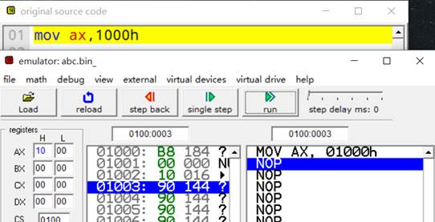</p>
<p>xchg：交换指令（直接寻址）</p>
<p>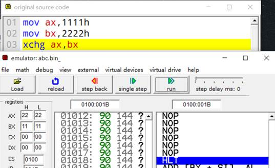</p>
<p>地址传送指令：lea</p>
<p>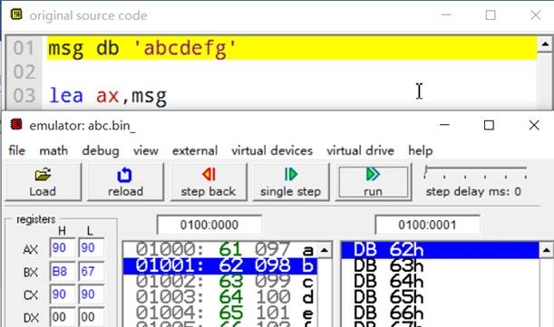</p>
<p>入栈出栈操作：Push/pop</p>
<p>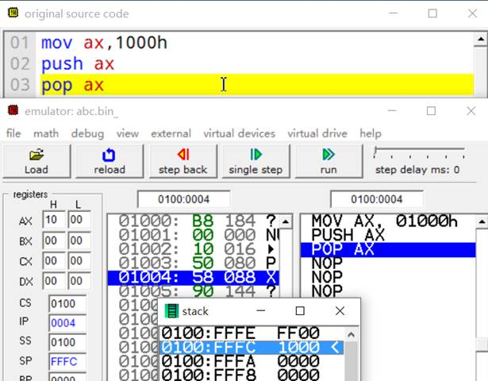</p>
<p>加法操作：add</p>
<p>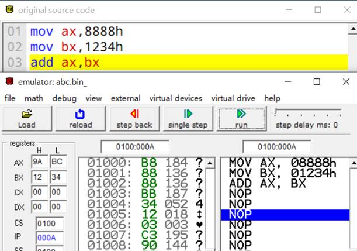</p>
<p>减法操作：sub</p>
<p>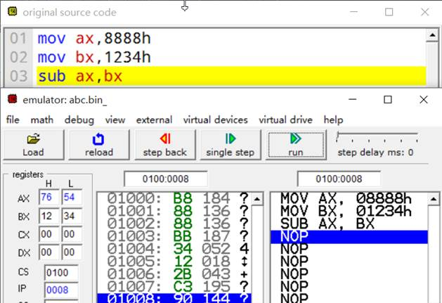</p>
<p>综合程序1</p>
<p>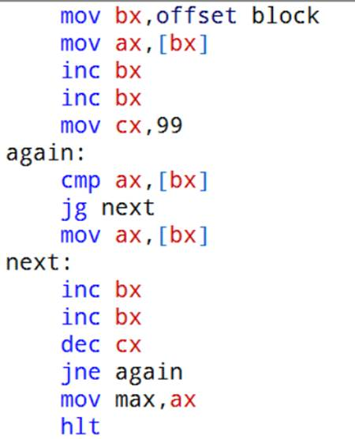</p>
<p>乘法操作：div</p>
<p>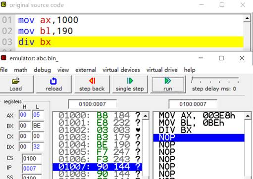</p>
<p>and指令</p>
<p>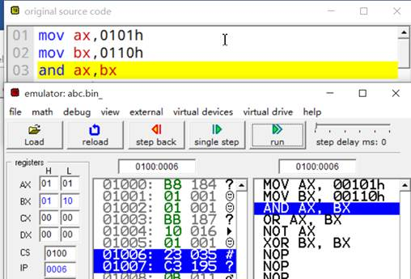</p>
<p>or指令</p>
<p>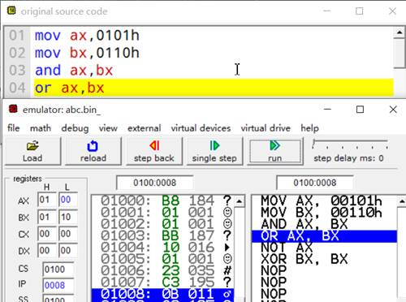</p>
<p>not指令</p>
<p>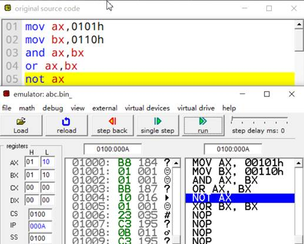</p>
<p>异或（xor）指令</p>
<p>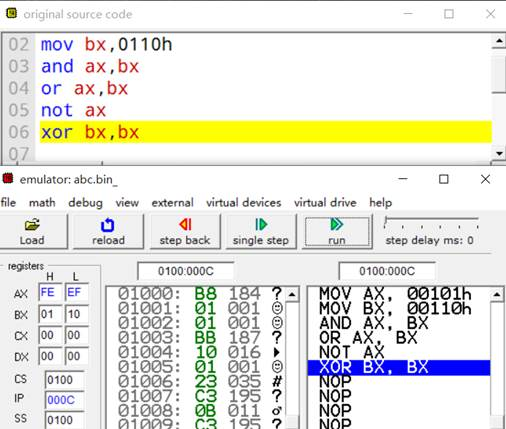</p>
<p>移位指令：sal</p>
<p>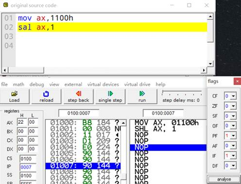</p>
<p><strong>移位指令：**</strong>sar**</p>
<p>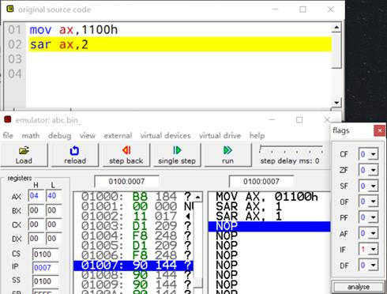</p>
<p>串操作指令：movsb</p>
<p>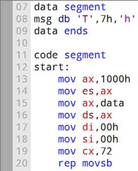</p>
<p>jmp指令</p>
<p>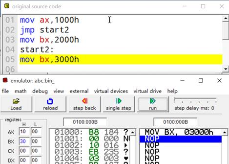</p>
<p>循环操作指令</p>
<p>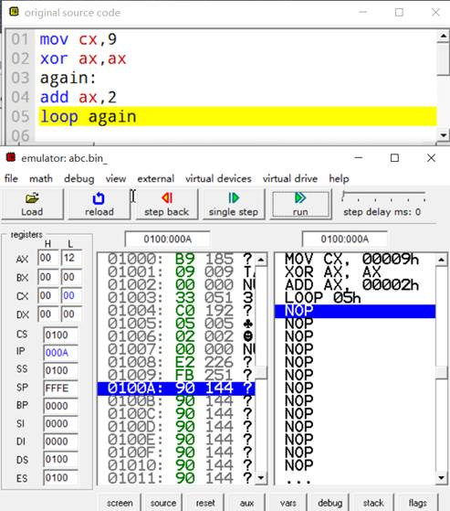</p>
<h3 id="二、编写一个简单的程序"><a href="#二、编写一个简单的程序" class="headerlink" title="二、编写一个简单的程序"></a>二、编写一个简单的程序</h3><p>将“This is my first ASM program-姓名（汉语拼音各人的姓名）”放在DS=1000H，BX=0000H开始的存储器单元中，然后将该内容搬移到BX=0100H开始的单元中，最后将该字符串通过DOS功能调用显示在屏幕上。</p>
<h4 id="代码"><a href="#代码" class="headerlink" title="代码"></a>代码</h4><figure class="highlight plain"><table><tr><td class="code"><pre><span class="line">name &apos;aa&apos;</span><br><span class="line"></span><br><span class="line">org 00h</span><br><span class="line"></span><br><span class="line">assume cs:code ds:data</span><br><span class="line"></span><br><span class="line">data segment</span><br><span class="line">msg db &apos;T&apos;,7h,&apos;h&apos;,7h,&apos;i&apos;,7h,&apos;s&apos;,7h,&apos; &apos;,7h,&apos;m&apos;,7h,&apos;y&apos;,7h,&apos; &apos;,7h,&apos;f&apos;,7h,&apos;i&apos;,7h,&apos;r&apos;,7h,&apos;s&apos;,7h,&apos;t&apos;,7h,&apos; &apos;,7h,&apos;A&apos;,7h,&apos;S&apos;,7h,&apos;M&apos;,7h,&apos; &apos;,7h,&apos;p&apos;,7h,&apos;r&apos;,7h,&apos;o&apos;,7h,&apos;g&apos;,7h,&apos;r&apos;,7h,&apos;a&apos;,7h,&apos;m&apos;,7h,&apos;-&apos;,7h,&apos;W&apos;,7h,&apos;a&apos;,7h,&apos;n&apos;,7h,&apos;g&apos;,7h,&apos;R&apos;,7h,&apos;u&apos;,7h,&apos;i&apos;,7h</span><br><span class="line">data ends</span><br><span class="line"></span><br><span class="line">code segment </span><br><span class="line"></span><br><span class="line">start: </span><br><span class="line"></span><br><span class="line">  mov ax,1000h</span><br><span class="line">  mov es,ax</span><br><span class="line">  mov ax,data</span><br><span class="line">  mov ds,ax</span><br><span class="line">  mov di,00h</span><br><span class="line">  mov si,00h</span><br><span class="line">  mov cx,72</span><br><span class="line">  rep movsb</span><br><span class="line"></span><br><span class="line">  mov ax,0b800h</span><br><span class="line">  mov es,ax</span><br><span class="line">  mov di,0a00h</span><br><span class="line">  mov si,00h</span><br><span class="line">  mov cx,72</span><br><span class="line">  rep movsb</span><br><span class="line"></span><br><span class="line">  mov ax,1000h</span><br><span class="line">  mov es,ax</span><br><span class="line">  mov si,00h</span><br><span class="line">  mov di,0100h</span><br><span class="line">  mov cx,72</span><br><span class="line">  rep movsb  </span><br><span class="line"></span><br><span class="line">mov ax,4c00h</span><br><span class="line"></span><br><span class="line">int 21h </span><br><span class="line"></span><br><span class="line">code ends </span><br><span class="line"></span><br><span class="line">end start</span><br><span class="line"></span><br><span class="line">ret</span><br></pre></td></tr></table></figure>

<p>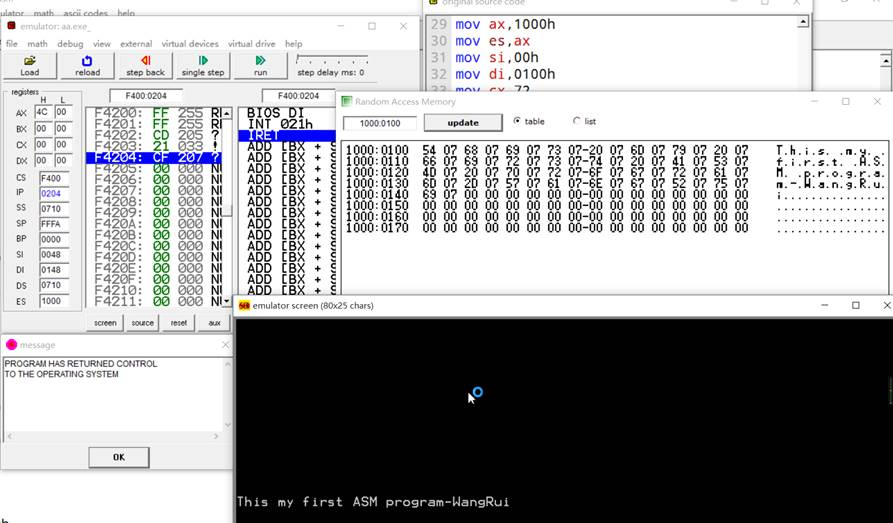</p>
<p>运用数据段和代码段，先将数据写入1000:0000，往屏幕输出后再将数据搬入1000:0100</p>
<h3 id="三、感受感想"><a href="#三、感受感想" class="headerlink" title="三、感受感想"></a>三、感受感想</h3><p>本学期新接触微机原理这门课程，刚开始接触汇编，感觉进入了新的领域，对其中的思想和思维方式还没有，在这次上机实验实际操作和作业过程中，巩固了老师上课所讲的要点，也学着用会变得角度去思考问题和设计思路，同时在自己的许多改正中了解了出现的错误所代表的内在性质，进一步加强了自己的理解。不过现在对于一些汇编指令还不够熟悉，需要经常查书，自己也会在基础知识这方面加强，写出更好看更实用的代码。</p>
<p><em>当时的自己hhhh</em></p>
<h1 id="实验二-顺序、分支、循环、子程序设计"><a href="#实验二-顺序、分支、循环、子程序设计" class="headerlink" title="实验二 顺序、分支、循环、子程序设计"></a>实验二 顺序、分支、循环、子程序设计</h1><h2 id="实验要求-1"><a href="#实验要求-1" class="headerlink" title="实验要求"></a>实验要求</h2><ol>
<li>教材P74例1。m=6,n=4,w=7。结果Q也放在内存中。</li>
<li>教材P75例3。</li>
<li>从键盘上输入1个数，判断其奇偶性，如果是奇数，屏幕上显示”It is odd”，否则显示”It is even”。</li>
<li>从键盘上输入N个字符（N&lt;16），求这N个字符中’A’的个数，并将’A’的个数显示在屏幕上。</li>
<li>已知BUF1中有N1个按从小到大的顺序排列的互不相等的无符号数，BUF2中有N2个从小到大的顺序排列的互不相等的无符号数。编写程序将BUF1和BUF2中的数合并到BUF3中，使在BUF3中存放的数互不相等且按从小到大的顺序排列。</li>
<li>需要预习报告。</li>
</ol>
<h2 id="实验目的-1"><a href="#实验目的-1" class="headerlink" title="实验目的"></a>实验目的</h2><p>学习顺序、分支、循环结构以及子程序的编程设计。</p>
<h2 id="实验内容-1"><a href="#实验内容-1" class="headerlink" title="实验内容"></a>实验内容</h2><h3 id="1-源码"><a href="#1-源码" class="headerlink" title="1.源码"></a>1.源码</h3><figure class="highlight plain"><table><tr><td class="code"><pre><span class="line">; You may customize this and other start-up templates; </span><br><span class="line">; The location of this template is c:\emu8086\inc\0_com_template.txt</span><br><span class="line"></span><br><span class="line">org 100h</span><br><span class="line"></span><br><span class="line">data db 6,4,7          ;定义数字</span><br><span class="line">xor ax,ax</span><br><span class="line">lea si,data</span><br><span class="line">mov al,[si]            ;储存数字</span><br><span class="line">mov bl,[si+1]</span><br><span class="line">mul bl                 ;乘法运算</span><br><span class="line">sub al,[si+2]          ;加法运算</span><br><span class="line">mov [si+3],ax          ;储存结果</span><br><span class="line"></span><br><span class="line">mov ax,4c00h</span><br><span class="line">int 21h                ;程序结束</span><br></pre></td></tr></table></figure>

<p>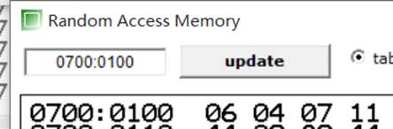</p>
<p>结果依次存放在内存代码段，6,4,7均为需进行运算的数，11为最后结果。</p>
<h3 id="2-源码"><a href="#2-源码" class="headerlink" title="2.源码"></a>2.源码</h3><figure class="highlight plain"><table><tr><td class="code"><pre><span class="line"></span><br><span class="line">; You may customize this and other start-up templates; </span><br><span class="line">; The location of this template is c:\emu8086\inc\0_com_template.txt</span><br><span class="line"></span><br><span class="line">org 100h</span><br><span class="line"></span><br><span class="line">data1 db 40 dup(90)                ;为简便输入，假设前40人90分，后40人59分</span><br><span class="line">data2 db 40 dup(59)</span><br><span class="line">buffer db 4 dup(0)</span><br><span class="line"></span><br><span class="line">start:</span><br><span class="line">    xor dx,dx</span><br><span class="line">    xor bx,bx</span><br><span class="line">    mov cx,80</span><br><span class="line">    lea si,data1</span><br><span class="line">    lea di,buffer</span><br><span class="line">goon:</span><br><span class="line">    mov al,[si]</span><br><span class="line">    cmp al,90</span><br><span class="line">    jc next3</span><br><span class="line">    inc dh</span><br><span class="line">    jmp stor</span><br><span class="line">next3:</span><br><span class="line">    cmp al,70</span><br><span class="line">    jc next5</span><br><span class="line">    inc dl</span><br><span class="line">    jmp stor</span><br><span class="line">next5:</span><br><span class="line">    cmp al,60</span><br><span class="line">    jc next7</span><br><span class="line">    inc bh</span><br><span class="line">    jmp stor</span><br><span class="line">next7:</span><br><span class="line">    inc bl</span><br><span class="line">stor:</span><br><span class="line">    inc si</span><br><span class="line">    loop goon</span><br><span class="line">    mov [di],dh</span><br><span class="line">    mov [di+1&#125;,dl</span><br><span class="line">    mov [di+2],bh</span><br><span class="line">    mov [di+3],bl</span><br><span class="line">mov ax,4c00h</span><br><span class="line">int 21h</span><br><span class="line"></span><br><span class="line">ret</span><br></pre></td></tr></table></figure>

<p>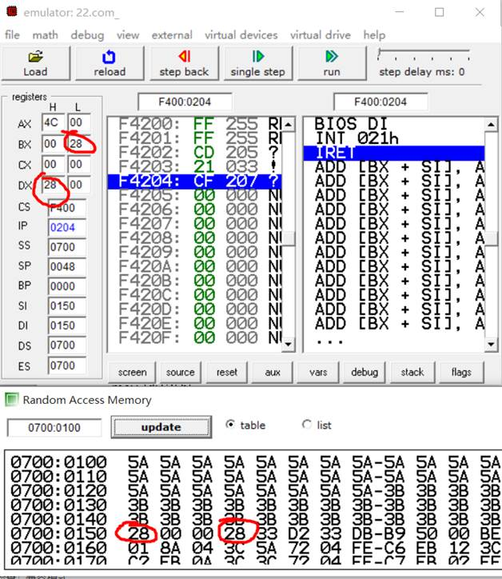</p>
<p>最后在bl、dh、内存中都能找到成绩归类后的计数。</p>
<h3 id="3-源码"><a href="#3-源码" class="headerlink" title="3.源码"></a>3.源码</h3><figure class="highlight plain"><table><tr><td class="code"><pre><span class="line">data1 segment</span><br><span class="line">    msgo db &quot;It is odd&quot;,0ah,0dh,&quot;$&quot;</span><br><span class="line">    msge db &quot;It is even&quot;,0ah,0dh,&quot;$&quot;</span><br><span class="line">    num db 20</span><br><span class="line">data1 ends </span><br><span class="line"></span><br><span class="line">code1 segment</span><br><span class="line">    assume cs:coda1 ds:data1</span><br><span class="line">start:</span><br><span class="line">    mov ax,data1</span><br><span class="line">    mov ds,ax</span><br><span class="line">    lea dx,num    </span><br><span class="line">    </span><br><span class="line">    mov ah,0ah                  ;输入数字到缓冲区</span><br><span class="line">    int 21h</span><br><span class="line">    </span><br><span class="line">    xor ax,ax</span><br><span class="line">    mov al,[num+1]</span><br><span class="line">    mov si,ax</span><br><span class="line">    add si,1ah      </span><br><span class="line">    shr [si],1</span><br><span class="line">    </span><br><span class="line">    jb odd</span><br><span class="line">    </span><br><span class="line">    lea dx,msge</span><br><span class="line">    mov ah,09h</span><br><span class="line">    int 21h</span><br><span class="line">    jmp over</span><br><span class="line">    </span><br><span class="line">    odd:</span><br><span class="line">        lea dx,msgo</span><br><span class="line">        mov ah,09h</span><br><span class="line">        int 21h</span><br><span class="line">                </span><br><span class="line">    over:</span><br><span class="line">        mov ah,4ch</span><br><span class="line">        int 21h</span><br><span class="line">code1 ends</span><br><span class="line">end start</span><br></pre></td></tr></table></figure>

<p>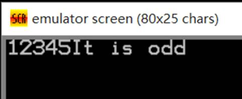</p>
<p>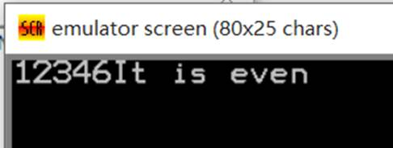</p>
<h3 id="4-源码"><a href="#4-源码" class="headerlink" title="4.源码"></a>4.源码</h3><figure class="highlight plain"><table><tr><td class="code"><pre><span class="line">data1 segment</span><br><span class="line">    msg db 16</span><br><span class="line">data1 ends</span><br><span class="line"></span><br><span class="line">code1 segment</span><br><span class="line">    assume cs:code1 ds:data1</span><br><span class="line">start:</span><br><span class="line">    mov ax,data1</span><br><span class="line">    mov ds,ax</span><br><span class="line">    </span><br><span class="line">    mov ah,0ah                     ;输入字符串到缓冲区</span><br><span class="line">    int 21h</span><br><span class="line">    </span><br><span class="line">    mov cl,[msg+1]</span><br><span class="line">    </span><br><span class="line">    lea si,msg</span><br><span class="line">    add si,2h</span><br><span class="line">    again:</span><br><span class="line">        cmp [si],65</span><br><span class="line">        jz addd</span><br><span class="line">        inc si</span><br><span class="line">        dec cx</span><br><span class="line">        cmp cx,0</span><br><span class="line">        jz pr</span><br><span class="line">        jnz again</span><br><span class="line">    addd:</span><br><span class="line">        inc si</span><br><span class="line">        inc dx                     ;计数</span><br><span class="line">        cmp cx,0</span><br><span class="line">        dec cx</span><br><span class="line">        jnz again</span><br><span class="line">    pr:</span><br><span class="line">        add dl,30h                 ;技术结果存在dl里</span><br><span class="line">        mov ah,02h                 ;输出dl里面的技术结果</span><br><span class="line">        int 21h</span><br><span class="line">              </span><br><span class="line">        mov ah,4ch</span><br><span class="line">        int 21h</span><br><span class="line"></span><br><span class="line">code1 ends</span><br><span class="line">end start</span><br></pre></td></tr></table></figure>

<p>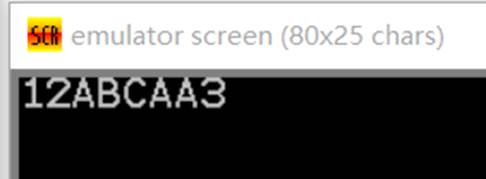</p>
<h3 id="5-源码"><a href="#5-源码" class="headerlink" title="5.源码"></a>5.源码</h3><figure class="highlight plain"><table><tr><td class="code"><pre><span class="line">data1 segment</span><br><span class="line">    buf1 db 05h,31h,33h,34h,36h,37h		;buf1和buf2里面的第一个数字为要排列数字的个数</span><br><span class="line">    buf2 db 04h,32h,35h,37h,39h		    ;设除了第一个数字以外为有效数字，则第一个数字为有效数字的个数</span><br><span class="line">    buf3 db 09h dup(0)					;buf3的第一个数字为需要buf1和buf2有效数字之和</span><br><span class="line">data1 ends</span><br><span class="line"></span><br><span class="line">stack1 segment</span><br><span class="line">    sta db 10h                           ;用到栈，即设置栈</span><br><span class="line">stack1 ends</span><br><span class="line"></span><br><span class="line">code1 segment</span><br><span class="line">    assume cs:code1 ds:data1 ss:stack1</span><br><span class="line">    </span><br><span class="line">    start:</span><br><span class="line">        mov ax,data1</span><br><span class="line">        mov ds,ax</span><br><span class="line">        mov es,ax                         ;设置ds、es</span><br><span class="line">        mov ax,stack1                     ;设置栈段</span><br><span class="line">        mov ss,ax</span><br><span class="line">        </span><br><span class="line">        lea si,buf1+1</span><br><span class="line">        lea di,buf2+1                     ;设置偏移地址</span><br><span class="line">        </span><br><span class="line">        mov ch,buf1</span><br><span class="line">        mov cl,buf2</span><br><span class="line">        </span><br><span class="line">        a1:</span><br><span class="line">            cmp ch,0</span><br><span class="line">            jz ers</span><br><span class="line">            cmp cl,0</span><br><span class="line">            jz yis                        ;ch和cl里分别保存了buf1和buf2的有效数字的个数</span><br><span class="line">            </span><br><span class="line">            mov ah,[si]</span><br><span class="line">            mov al,[di]</span><br><span class="line">            cmp ah,al</span><br><span class="line">            js xiao                       ;进行比较，根据不同结果跳转到不同执行过程</span><br><span class="line">            jz deng</span><br><span class="line">            jns da</span><br><span class="line">            </span><br><span class="line">            xor dx,dx</span><br><span class="line">            xor bl,bl</span><br><span class="line">            xiao:                         ; 前者&lt;后者</span><br><span class="line">                mov dl,ah</span><br><span class="line">                push dx</span><br><span class="line">                inc bl</span><br><span class="line">                inc si</span><br><span class="line">                dec ch</span><br><span class="line">                jmp a1</span><br><span class="line">            </span><br><span class="line">            deng:                          ;前者=后者</span><br><span class="line">                mov dl,ah</span><br><span class="line">                push dx</span><br><span class="line">                inc bl</span><br><span class="line">                inc si</span><br><span class="line">                inc di</span><br><span class="line">                dec ch</span><br><span class="line">                dec cl</span><br><span class="line">                jmp a1</span><br><span class="line">            da:                            ;前者&gt;后者</span><br><span class="line">                mov dl,al</span><br><span class="line">                push dx</span><br><span class="line">                inc bl</span><br><span class="line">                inc di</span><br><span class="line">                dec cl</span><br><span class="line">                jmp a1</span><br><span class="line">            </span><br><span class="line">        yis:                               ;buf1有剩余时</span><br><span class="line">            mov dl,ch</span><br><span class="line">            push dx</span><br><span class="line">            pop cx</span><br><span class="line">            xor dx,dx</span><br><span class="line">            again1:</span><br><span class="line">                mov dl,[si]</span><br><span class="line">                push dx</span><br><span class="line">                inc bl</span><br><span class="line">                inc si</span><br><span class="line">                loop again1</span><br><span class="line">            jmp rev</span><br><span class="line">                </span><br><span class="line">        ers:                                ;buf2有剩余时</span><br><span class="line">            xor dx,dx</span><br><span class="line">            again2:</span><br><span class="line">                mov dl,[di]</span><br><span class="line">                push dx </span><br><span class="line">                inc bl</span><br><span class="line">                inc di</span><br><span class="line">                loop again2</span><br><span class="line">            jmp rev</span><br><span class="line">        rev:                                ;数据压入栈后倒叙输出，并输出到指定内存位置（即buf3的位置）</span><br><span class="line">            lea si,buf3</span><br><span class="line">            add si,bx</span><br><span class="line">            dec si</span><br><span class="line">            again: </span><br><span class="line">                cmp sp,0h</span><br><span class="line">                jz over</span><br><span class="line">                pop dx</span><br><span class="line">                mov [si],dl</span><br><span class="line">                dec si</span><br><span class="line">                loop again    </span><br><span class="line">                        </span><br><span class="line">        over:</span><br><span class="line">            mov ah,4ch</span><br><span class="line">            int 21h</span><br><span class="line">code1 ends</span><br><span class="line">end start</span><br></pre></td></tr></table></figure>

<p>程序开始时的内存状态：</p>
<p>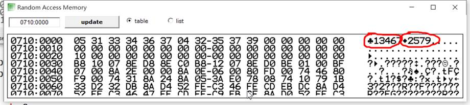</p>
<p>运行后的栈内情况：</p>
<p>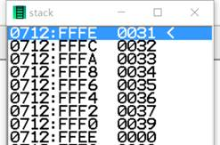</p>
<p>运行后的内存情况（排序结果紧随其后）</p>
<p>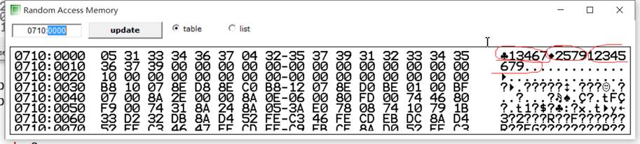</p>
<h1 id="实验三-综合程序设计"><a href="#实验三-综合程序设计" class="headerlink" title="实验三 综合程序设计"></a>实验三 综合程序设计</h1><h2 id="实验要求-2"><a href="#实验要求-2" class="headerlink" title="实验要求"></a>实验要求</h2><p>编写程序实现下列5项功能，通过从键盘输入1～5进行菜单式选择：</p>
<ol>
<li>按数字键“1”，完成将字符串中的小写字母变换成大写字母。用户输入由英文大小写字母或数字0～9组成的字符串（以回车结束），变换后按下列格式在屏幕上显示：</li>
</ol>
<p>&lt;原字符串&gt;例如：abcdgyt0092</p>
<p>&lt;新字符串&gt; ABCDGYT0092</p>
<p>按任一键重做；按Esc键返回主菜单。</p>
<ol start="2">
<li>按数字键“2”，完成在字符串中找最大值。用户输入由英文大小写字母或数字0～9 组成的字符串（以回车结束），找出其中数字字符的最大值，按下列格式在屏幕上显示：</li>
</ol>
<p>&lt;原字符串&gt; The maximum number is &lt;最大值&gt;．</p>
<p>按任一键重做；按Esc键返回主菜单。</p>
<ol start="3">
<li>按数字键“3”，完成输入数据组的排序。用户输入一组（小于50个）十进制数值（小于255），中间以逗号分隔，回车表示输入结束。按递增方式进行排序，并将结果按下列格式在屏幕上显示：</li>
</ol>
<p>&lt;原数值串&gt;</p>
<p>&lt;新数值串&gt;</p>
<p>按任一键重做；按Esc键返回主菜单。</p>
<ol start="4">
<li>按数字键“4”，完成系统时间的显示。首先提示用户对时，即改变系统的定时器HH：MM：SS（以冒号间隔，回车结束），然后在屏幕的右上角实时显示出时间：HH：MM：SS。</li>
</ol>
<p>按任一键重新对时；按Esc键返回主菜单。</p>
<ol start="5">
<li>按数字键“5”，结束程序的运行，返回系统。</li>
</ol>
<p>请提前做好上级预习工作。</p>
<h2 id="实验目的-2"><a href="#实验目的-2" class="headerlink" title="实验目的"></a>实验目的</h2><p>学习掌握DOS常用功能的调用方法，综合进行程序设计。增强和提高汇编语言程序设计的能力，掌握模块化程序的设计方法。</p>
<h2 id="实验内容-2"><a href="#实验内容-2" class="headerlink" title="实验内容"></a>实验内容</h2><h3 id="1-源码-1"><a href="#1-源码-1" class="headerlink" title="1.源码"></a>1.源码</h3><figure class="highlight plain"><table><tr><td class="code"><pre><span class="line">data1 segment</span><br><span class="line">    org 0</span><br><span class="line">    info11 db &quot;Please press keys:$&quot;</span><br><span class="line">    info12 db &quot;translated to:$&quot;</span><br><span class="line">          </span><br><span class="line">    info21 db &quot;Please input the string:$&quot;</span><br><span class="line">    info22 db &quot;The max is:$&quot;</span><br><span class="line">        </span><br><span class="line">    info41 db &quot;Please correct the time:$&quot;</span><br><span class="line">        </span><br><span class="line">    in1 db 16</span><br><span class="line">    out1 db 16</span><br><span class="line">    </span><br><span class="line">    in2 db 16</span><br><span class="line">    out2 db 1</span><br><span class="line">    </span><br><span class="line">    in31 db 50</span><br><span class="line">    in311 db 49 dup(0)</span><br><span class="line">    in32 db 255 </span><br><span class="line">    </span><br><span class="line">    time4 db &quot;00:00:00$&quot;</span><br><span class="line">         </span><br><span class="line">    str1 db &quot;Please switch the function number&quot;,0ah,0dh,&quot;1.lower to upper&quot;,0ah,0dh,&quot;2.find the max&quot;,0ah,0dh,&quot;3.sort the number&quot;,0ah,0dh,&quot;4.display the time&quot;,0ah,0dh,&quot;5.exit the system&quot;,0ah,0dh,&quot;$&quot;         </span><br><span class="line">data1 ends</span><br><span class="line"></span><br><span class="line">stack1 segment</span><br><span class="line">    stack dw 100</span><br><span class="line">stack1 ends</span><br><span class="line"></span><br><span class="line">code1 segment</span><br><span class="line">    assume cs:code1 ds:data1</span><br><span class="line">    </span><br><span class="line">    start:</span><br><span class="line">        mov ax,data1</span><br><span class="line">        mov ds,ax</span><br><span class="line"></span><br><span class="line">    menu:</span><br><span class="line">        call clear</span><br><span class="line">        </span><br><span class="line">        lea dx,str1</span><br><span class="line">        mov ah,09h</span><br><span class="line">        int 21h</span><br><span class="line">        </span><br><span class="line">        mov ah,01h</span><br><span class="line">        int 21h    </span><br><span class="line">        cmp al,31h</span><br><span class="line">        jz fun1 </span><br><span class="line">        cmp al,32h</span><br><span class="line">        jz fun2         </span><br><span class="line">        cmp al,33h</span><br><span class="line">        jz fun3         </span><br><span class="line">        cmp al,34h</span><br><span class="line">        jz fun4           </span><br><span class="line">        cmp al,35h</span><br><span class="line">        jz over</span><br><span class="line">        </span><br><span class="line">    fun1:</span><br><span class="line">        call clear         ;clear the screen</span><br><span class="line">        </span><br><span class="line">        call fun11</span><br><span class="line">        mov ah,0h</span><br><span class="line">        int 16h</span><br><span class="line">        cmp ah,01h</span><br><span class="line">        jz menu</span><br><span class="line">        jnz fun1</span><br><span class="line">         </span><br><span class="line">             </span><br><span class="line">    fun2:</span><br><span class="line">        call clear</span><br><span class="line">         </span><br><span class="line">        call fun22 </span><br><span class="line">        mov ah,0h</span><br><span class="line">        int 16h</span><br><span class="line">        cmp ah,01h</span><br><span class="line">        jz menu</span><br><span class="line">        jnz fun2</span><br><span class="line">   </span><br><span class="line">    fun3:</span><br><span class="line">        call clear</span><br><span class="line">        </span><br><span class="line">        call fun33 </span><br><span class="line">        mov ah,0h</span><br><span class="line">        int 16h</span><br><span class="line">        cmp ah,01h</span><br><span class="line">        jz menu</span><br><span class="line">        jnz fun3</span><br><span class="line">            </span><br><span class="line">    fun4:</span><br><span class="line">        call clear</span><br><span class="line">        </span><br><span class="line">        call fun44</span><br><span class="line">        mov ah,0h</span><br><span class="line">        int 16h</span><br><span class="line">        cmp ah,01h</span><br><span class="line">        jz menu</span><br><span class="line">        jnz fun4</span><br><span class="line">                                </span><br><span class="line">    fun11 proc near    </span><br><span class="line">        lea dx,info11</span><br><span class="line">        mov ah,09h</span><br><span class="line">        int 21h          ;display &quot;Press...&quot;</span><br><span class="line">        </span><br><span class="line">        lea dx,in1</span><br><span class="line">        mov ah,0ch</span><br><span class="line">        mov al,0ah</span><br><span class="line">        int 21h          ;input the string</span><br><span class="line">        </span><br><span class="line">        lea si,in1</span><br><span class="line">        inc si</span><br><span class="line">        </span><br><span class="line">        mov cl,[si]</span><br><span class="line">        inc cl</span><br><span class="line">        again11:          ;loop of check</span><br><span class="line">            dec cl</span><br><span class="line">            cmp cl,0h</span><br><span class="line">            jz output1</span><br><span class="line">            inc si</span><br><span class="line">            cmp [si],61h</span><br><span class="line">            jc again11</span><br><span class="line">            cmp [si],7ah</span><br><span class="line">            ja again11</span><br><span class="line">            sub [si],20h</span><br><span class="line">            jmp again11</span><br><span class="line">            </span><br><span class="line">         output1:         ;output the result</span><br><span class="line">            call sl       ;set the location</span><br><span class="line">                   </span><br><span class="line">            lea dx,info12</span><br><span class="line">            mov ah,09h</span><br><span class="line">            int 21h</span><br><span class="line">            mov [si+1],24h</span><br><span class="line">            lea dx,in1</span><br><span class="line">            add dx,2h</span><br><span class="line">            mov ah,09h</span><br><span class="line">            int 21h     </span><br><span class="line">         ret</span><br><span class="line">    fun11 endp</span><br><span class="line">    </span><br><span class="line">    fun22 proc near</span><br><span class="line">        lea dx,info21</span><br><span class="line">        mov ah,09h</span><br><span class="line">        int 21h           ;display &quot;Please input the string&quot;</span><br><span class="line">        </span><br><span class="line">        lea dx,in2</span><br><span class="line">        mov ah,0ch</span><br><span class="line">        mov al,0ah</span><br><span class="line">        int 21h           ;input the string</span><br><span class="line">         </span><br><span class="line">        xor cx,cx </span><br><span class="line">        lea si,in2</span><br><span class="line">        inc si</span><br><span class="line">        mov cl,[si]</span><br><span class="line">        inc cl</span><br><span class="line">        xor bx,bx</span><br><span class="line">        again2:</span><br><span class="line">            dec cl </span><br><span class="line">            cmp cl,0h</span><br><span class="line">            jz output2</span><br><span class="line">            inc si</span><br><span class="line">            cmp [si],bl</span><br><span class="line">            jc again2</span><br><span class="line">            mov bl,[si]</span><br><span class="line">            jmp again2</span><br><span class="line">        </span><br><span class="line">        output2:</span><br><span class="line">            call sl</span><br><span class="line">            </span><br><span class="line">            lea dx,info22</span><br><span class="line">            mov ah,09h</span><br><span class="line">            int 21h</span><br><span class="line">            </span><br><span class="line">            lea si,out2</span><br><span class="line">            mov [si],bl</span><br><span class="line">            mov [si+1],24h</span><br><span class="line">            lea dx,out2</span><br><span class="line">            mov ah,09h</span><br><span class="line">            int 21h       </span><br><span class="line">    ret</span><br><span class="line">    fun22 endp</span><br><span class="line">    </span><br><span class="line">    fun33 proc near</span><br><span class="line">    so_s: </span><br><span class="line">        mov ah, 0aH  </span><br><span class="line">        lea si, in32</span><br><span class="line">        mov dx, si</span><br><span class="line">        lea di, in31</span><br><span class="line">        int 21H</span><br><span class="line">        inc si</span><br><span class="line">        mov ds:[di], 0 </span><br><span class="line">        mov cx, ds:[si]</span><br><span class="line">        and cx, 00FFH</span><br><span class="line">        mov bh, 0 </span><br><span class="line">        mov bl, 1</span><br><span class="line">        mov bp, 0 </span><br><span class="line">        mov dl, 0</span><br><span class="line">        mov ax, 0</span><br><span class="line">    so_1:</span><br><span class="line">        inc bp</span><br><span class="line">        inc bh</span><br><span class="line">        mov dh,ds:[si+bp]   </span><br><span class="line">        cmp dh, &apos;,&apos;</span><br><span class="line">        jz  so_2 </span><br><span class="line">        inc bh</span><br><span class="line">        cmp cx,1</span><br><span class="line">        jz so_2 </span><br><span class="line">        dec bh</span><br><span class="line">        jmp so_3</span><br><span class="line">    so_2:</span><br><span class="line">        add bl, 1 </span><br><span class="line">        cmp bh, bl</span><br><span class="line">        jz  st_1</span><br><span class="line">        add bl, 1</span><br><span class="line">        cmp bh, bl       </span><br><span class="line">        jz  st_2</span><br><span class="line">        add bl, 1</span><br><span class="line">        cmp bh, bl</span><br><span class="line">        jz  st_3 </span><br><span class="line">        jmp so_3</span><br><span class="line">    st_1:</span><br><span class="line">        sub bl, 1</span><br><span class="line">        push bx </span><br><span class="line">        push si</span><br><span class="line">        mov bh, 0</span><br><span class="line">        add si, bx</span><br><span class="line">        mov al, ds:[si]</span><br><span class="line">        sub al, 30H</span><br><span class="line">        pop si</span><br><span class="line">        pop bx</span><br><span class="line">        jmp st_4</span><br><span class="line">    st_2:</span><br><span class="line">        sub bl, 2</span><br><span class="line">        push bx </span><br><span class="line">        push si</span><br><span class="line">        mov bh, 0 </span><br><span class="line">        add si, bx</span><br><span class="line">        mov al, ds:[si]</span><br><span class="line">        sub al, 30H </span><br><span class="line">        mov dl, 10</span><br><span class="line">        mul dl</span><br><span class="line">        add al, ds:[si+1]</span><br><span class="line">        sub al, 30H  </span><br><span class="line">        pop si</span><br><span class="line">        pop bx</span><br><span class="line">        jmp st_4</span><br><span class="line">    st_3:</span><br><span class="line">        sub bl, 3 </span><br><span class="line">        push bx</span><br><span class="line">        push si</span><br><span class="line">        mov bh, 0</span><br><span class="line">        add si, bx</span><br><span class="line">        mov al, ds:[si]</span><br><span class="line">        sub al, 30H</span><br><span class="line">        mov dl, 100</span><br><span class="line">        mul dl</span><br><span class="line">        mov bh, al</span><br><span class="line">        mov al, ds:[si+1]</span><br><span class="line">        sub al, 30H</span><br><span class="line">        mov dl, 10</span><br><span class="line">        mul dl</span><br><span class="line">        add bh, al</span><br><span class="line">        add bh, ds:[si+2]</span><br><span class="line">        sub bh, 30H</span><br><span class="line">        mov al, bh </span><br><span class="line">        pop si</span><br><span class="line">        pop bx</span><br><span class="line">        jmp st_4</span><br><span class="line">    st_4:</span><br><span class="line">        mov bl, bh</span><br><span class="line">        inc bl  </span><br><span class="line">        inc dl</span><br><span class="line">        push bp</span><br><span class="line">        inc ds:[di]</span><br><span class="line">        mov bp, ds:[di] </span><br><span class="line">        and bp, 00FFH</span><br><span class="line">        mov ds:[bp+di], al</span><br><span class="line">        pop bp</span><br><span class="line">    so_3:</span><br><span class="line">        loop so_1</span><br><span class="line">        push dx</span><br><span class="line">        push si</span><br><span class="line">        push cx</span><br><span class="line">        push ax</span><br><span class="line">        push bp</span><br><span class="line">        push bx</span><br><span class="line">        call bubble</span><br><span class="line">        pop bx </span><br><span class="line">        pop bp</span><br><span class="line">        pop ax</span><br><span class="line">        pop cx</span><br><span class="line">        pop si</span><br><span class="line">        pop dx   </span><br><span class="line">        lea dx, in31</span><br><span class="line">        mov si, dx </span><br><span class="line">        lea dx, in32</span><br><span class="line">        mov di, dx</span><br><span class="line">        mov bl, 10</span><br><span class="line">        mov cx, ds:[si]</span><br><span class="line">        and cx, 00FFH </span><br><span class="line">        inc di</span><br><span class="line">        mov bp, 0</span><br><span class="line">    so_4:</span><br><span class="line">        inc bp</span><br><span class="line">        mov ah, 0H</span><br><span class="line">        mov al, ds:[si+bp]</span><br><span class="line">        cmp al, 99</span><br><span class="line">        ja so_5</span><br><span class="line">        cmp al, 9</span><br><span class="line">        ja so_6</span><br><span class="line">        jmp so_7</span><br><span class="line">    so_5:</span><br><span class="line">        div bl</span><br><span class="line">        mov dh, ah</span><br><span class="line">        mov ah, 00H</span><br><span class="line">        div bl </span><br><span class="line">        add al, 30H</span><br><span class="line">        mov ds:[di+1], al</span><br><span class="line">        add ah, 30H</span><br><span class="line">        mov ds:[di+2], ah</span><br><span class="line">        add dh, 30H</span><br><span class="line">        mov ds:[di+3], dh</span><br><span class="line">        mov ds:[di+4], &apos;,&apos;</span><br><span class="line">        add di, 4 </span><br><span class="line">        jmp so_8  </span><br><span class="line">    so_6:</span><br><span class="line">        div bl </span><br><span class="line">        add al, 30H</span><br><span class="line">        mov ds:[di+1], al</span><br><span class="line">        add ah, 30H </span><br><span class="line">        mov ds:[di+2], ah</span><br><span class="line">        mov ds:[di+3], &apos;,&apos;</span><br><span class="line">        add di, 3</span><br><span class="line">        jmp so_8</span><br><span class="line">    so_7:</span><br><span class="line">        add al,30H</span><br><span class="line">        mov ds:[di+1], al</span><br><span class="line">        mov ds:[di+2], &apos;,&apos;</span><br><span class="line">        add di, 2</span><br><span class="line">    so_8:</span><br><span class="line">        loop so_4</span><br><span class="line">        mov ds:[di+1], &apos;$&apos;</span><br><span class="line">        mov ah, 03H  </span><br><span class="line">        mov bh, 0H</span><br><span class="line">        int 10H</span><br><span class="line">        add dh, 01H</span><br><span class="line">        mov dl, 0</span><br><span class="line">        mov ah, 02H</span><br><span class="line">        int 10H</span><br><span class="line">        lea dx, in32</span><br><span class="line">        inc dx</span><br><span class="line">        inc dx</span><br><span class="line">        mov ah, 09H</span><br><span class="line">        int 21H      </span><br><span class="line">    ret    </span><br><span class="line">    fun33 endp</span><br><span class="line"> </span><br><span class="line">    bubble proc near</span><br><span class="line">        lea dx, in31</span><br><span class="line">        mov si, dx</span><br><span class="line">        mov cx, ds:[si]</span><br><span class="line">        and cx, 00FFH </span><br><span class="line">        inc si </span><br><span class="line">        mov bp, 0FFFFH</span><br><span class="line">        mov ah, 0 </span><br><span class="line">        mov al, 0</span><br><span class="line">    bu_1:</span><br><span class="line">        inc bp</span><br><span class="line">        mov ah, ds:[si+bp]</span><br><span class="line">        mov bh, ah</span><br><span class="line">        mov dx, bp</span><br><span class="line">        push cx</span><br><span class="line">        push bp</span><br><span class="line">        dec cx</span><br><span class="line">    bu_3:</span><br><span class="line">        inc bp</span><br><span class="line">        mov al, ds:[si+bp] </span><br><span class="line">        cmp cx, 0</span><br><span class="line">        jz bu_6</span><br><span class="line">        cmp al, ah </span><br><span class="line">        jna bu_4</span><br><span class="line">        jmp bu_5</span><br><span class="line">    bu_4:</span><br><span class="line">        mov ah, al</span><br><span class="line">        mov dx, bp </span><br><span class="line">    bu_5:</span><br><span class="line">        loop bu_3</span><br><span class="line">    bu_6:</span><br><span class="line">        pop bp</span><br><span class="line">        pop cx</span><br><span class="line">        mov ds:[si+bp], ah</span><br><span class="line">        push bp</span><br><span class="line">        mov bp, dx</span><br><span class="line">        mov ds:[si+bp], bh</span><br><span class="line">        pop bp</span><br><span class="line">        loop bu_1    </span><br><span class="line">    ret</span><br><span class="line">    bubble endp</span><br><span class="line">    </span><br><span class="line">    fun44 proc near</span><br><span class="line">        lea dx,info41</span><br><span class="line">        mov ah,09h</span><br><span class="line">        int 21h</span><br><span class="line">        </span><br><span class="line">        mov ah,2ch</span><br><span class="line">        int 21h</span><br><span class="line">        </span><br><span class="line">        xor ax,ax</span><br><span class="line">        xor bx,bx</span><br><span class="line">        mov al,ch</span><br><span class="line">        lea si,time4</span><br><span class="line">        mov bl,0ah</span><br><span class="line">        mov al,ch</span><br><span class="line">        div bl</span><br><span class="line">        mov [si],al</span><br><span class="line">        add [si],30h</span><br><span class="line">        inc si</span><br><span class="line">        mov [si],ah</span><br><span class="line">        add [si],30h</span><br><span class="line">        add si,2h</span><br><span class="line">        </span><br><span class="line">        xor ax,ax</span><br><span class="line">        mov al,cl</span><br><span class="line">        div bl</span><br><span class="line">        mov [si],al</span><br><span class="line">        add [si],30h</span><br><span class="line">        inc si</span><br><span class="line">        mov [si],ah</span><br><span class="line">        add [si],30h</span><br><span class="line">        add si,2h</span><br><span class="line">        </span><br><span class="line">        xor ax,ax</span><br><span class="line">        mov al,dh</span><br><span class="line">        div bl</span><br><span class="line">        mov [si],al</span><br><span class="line">        add [si],30h</span><br><span class="line">        inc si</span><br><span class="line">        mov [si],ah</span><br><span class="line">        add [si],30h</span><br><span class="line">        add si,2h           </span><br><span class="line">        </span><br><span class="line">        mov ah,02h</span><br><span class="line">        mov bh,0h</span><br><span class="line">        mov dh,00h</span><br><span class="line">        mov dl,48h     </span><br><span class="line">        int 10h </span><br><span class="line">        </span><br><span class="line">        lea dx,time4</span><br><span class="line">        mov ah,09h</span><br><span class="line">        int 21h </span><br><span class="line">    ret</span><br><span class="line">    fun44 endp</span><br><span class="line">    </span><br><span class="line">    clear proc near</span><br><span class="line">        mov ah,0h</span><br><span class="line">        mov al,3h</span><br><span class="line">        mov bl,0</span><br><span class="line">        int 10h</span><br><span class="line">        ret </span><br><span class="line">    clear endp </span><br><span class="line">    </span><br><span class="line">    sl proc near</span><br><span class="line">        mov ah,02h</span><br><span class="line">        mov bh,0h</span><br><span class="line">        mov dh,01h</span><br><span class="line">        mov dl,0h     </span><br><span class="line">        int 10h</span><br><span class="line">    ret</span><br><span class="line">    sl endp </span><br><span class="line">              </span><br><span class="line">    over:</span><br><span class="line">        mov ah,4ch</span><br><span class="line">        int 21h</span><br><span class="line">code1 ends</span><br><span class="line">end start</span><br></pre></td></tr></table></figure>

<h2 id="实验结果"><a href="#实验结果" class="headerlink" title="实验结果"></a>实验结果</h2><h3 id="开始的菜单界面"><a href="#开始的菜单界面" class="headerlink" title="开始的菜单界面"></a>开始的菜单界面</h3><p>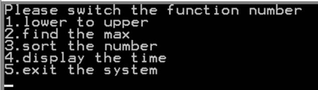</p>
<h3 id="小写转大写"><a href="#小写转大写" class="headerlink" title="小写转大写"></a>小写转大写</h3><p>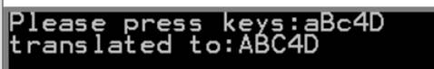</p>
<h3 id="找到ASCII码值最大的"><a href="#找到ASCII码值最大的" class="headerlink" title="找到ASCII码值最大的"></a>找到ASCII码值最大的</h3><p>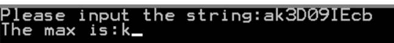</p>
<h3 id="排序"><a href="#排序" class="headerlink" title="排序"></a>排序</h3><p>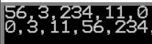</p>
<h3 id="同步时间"><a href="#同步时间" class="headerlink" title="同步时间"></a>同步时间</h3><p>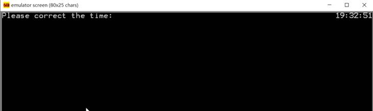</p>
<h3 id="结束"><a href="#结束" class="headerlink" title="结束"></a>结束</h3><p>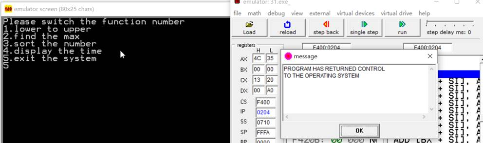</p>
<h1 id="实验四-软硬件综合设计"><a href="#实验四-软硬件综合设计" class="headerlink" title="实验四 软硬件综合设计"></a>实验四 软硬件综合设计</h1><h2 id="实验要求-3"><a href="#实验要求-3" class="headerlink" title="实验要求"></a>实验要求</h2><ol>
<li><p>安装并学习PROTEUS集成开发仿真平台；</p>
</li>
<li><p>使用PROTEUS完成基于8086最小系统的两块8X8 LED游动字符显示屏的软硬件仿真设计。显示内容：本人姓名+学号（英文或汉字均可，显示字模自行设计）</p>
</li>
</ol>
<h2 id="实验目的-3"><a href="#实验目的-3" class="headerlink" title="实验目的"></a>实验目的</h2><p>综合8086/8088CPU总线技术、存储器扩展、输入输出、微机系统常用芯片以及汇编语言编程等内容，综合检验课程学习掌握状况。</p>
<h2 id="实验内容-3"><a href="#实验内容-3" class="headerlink" title="实验内容"></a>实验内容</h2><h3 id="proteus仿真电路图"><a href="#proteus仿真电路图" class="headerlink" title="proteus仿真电路图**"></a>proteus仿真电路图**</h3><p>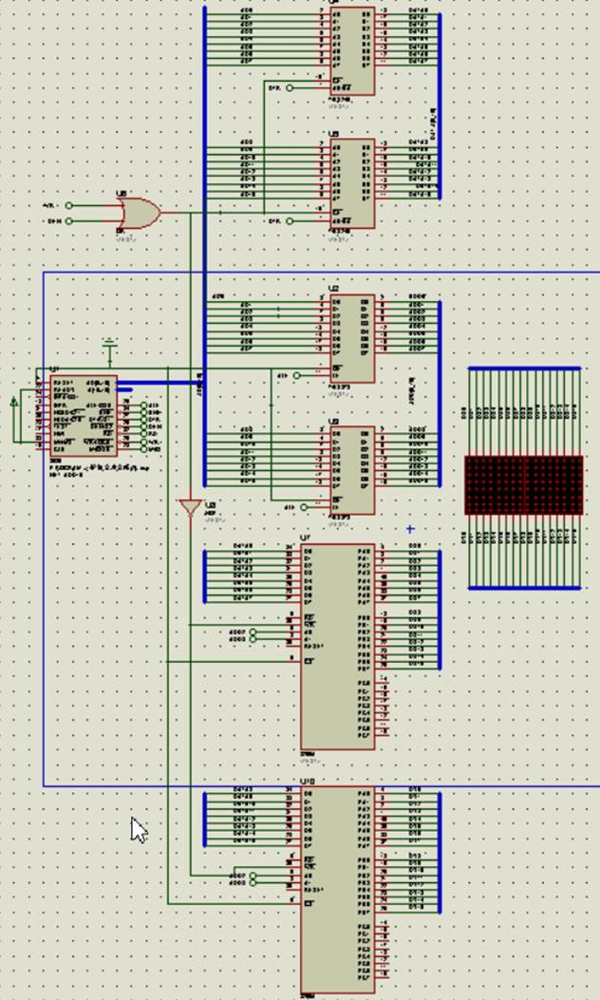</p>
<h3 id="所用器件"><a href="#所用器件" class="headerlink" title="所用器件"></a>所用器件</h3><p>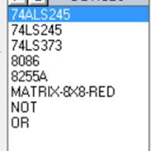</p>
<h3 id="结果截图"><a href="#结果截图" class="headerlink" title="结果截图"></a>结果截图</h3><p>显示“518”</p>
<p>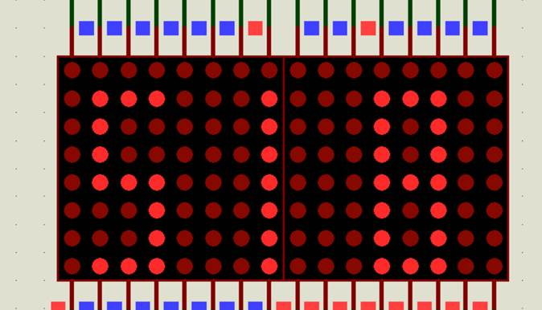</p>
<h3 id="源码"><a href="#源码" class="headerlink" title="源码"></a>源码</h3><figure class="highlight plain"><table><tr><td class="code"><pre><span class="line">data1 segment</span><br><span class="line">    data0 db 0ffh,0ffh,01h,0ffh,0ffh,    0ffh,61h,06dh,0dh,0ffh,    0ffh,0ffh,01h,0ffh,0ffh,    0ffh,01h,06dh,01h,0ffh,   0ffh,01h,07dh,01h,0ffh,    0ffh,0ffh,01h,0ffh,0ffh,   0ffh,0ffh,01h,0ffh,0ffh,     0ffh,01h,07dh,01h,0ffh,  0ffh,01h,07dh,01h,0ffh,   0ffh,61h,06dh,01h,0ffh,  0ffh,0fdh,0fdh,01h,0ffh,          0fbh,0efh,0bfh,0efh,0bfh,0efh,0fbh,     0ffh,0c3h,0dbh,0dbh,0c3h,0bfh,0ffh,     0ffh,0c3h,0fbh,0fbh,0c3h,0ffh,0ffh,     0ffh,0ffh,047h,057h,007h,0ffh,0ffh,     0ffh,0f7h,08fh,0f7h,0f7h,0ffh,0ffh,     0ffh,087h,0bfh,0bfh,087h,0ffh,0ffh,     0ffh,0ffh,08bh,0ffh,0ffh,0ffh,0ffh </span><br><span class="line">data1 ends                     ;define the data that will be displayed</span><br><span class="line"></span><br><span class="line">stack1 segment</span><br><span class="line">    db 10 dup(0)</span><br><span class="line">stack1 ends</span><br><span class="line"></span><br><span class="line">code1 segment</span><br><span class="line">    assume cs:code1,ds:data1,ss:stack1</span><br><span class="line">    start:</span><br><span class="line">        mov ax,data1</span><br><span class="line">        mov ds,ax            </span><br><span class="line">        mov bx,offset data0</span><br><span class="line">        mov ds:[100h],02h</span><br><span class="line">         </span><br><span class="line">         </span><br><span class="line">        s1:</span><br><span class="line">            mov cx,0ffh</span><br><span class="line">        s2:</span><br><span class="line">            mov ds:[102h],cx</span><br><span class="line">            mov bp,bx</span><br><span class="line">            mov cx,08h</span><br><span class="line">            mov al,1h</span><br><span class="line">            again1:</span><br><span class="line">                mov dx,0000h</span><br><span class="line">                mov ah,[bp]</span><br><span class="line">                inc bp</span><br><span class="line">                out dx,ax  </span><br><span class="line">                mul ds:[100h]</span><br><span class="line">                loop again1 </span><br><span class="line">                   </span><br><span class="line">        mov cx,08h </span><br><span class="line">        mov al,1h</span><br><span class="line">        </span><br><span class="line">        again2:</span><br><span class="line">            mov dx,0004h</span><br><span class="line">            mov ah,[bp]</span><br><span class="line">            inc bp</span><br><span class="line">            out dx,ax  </span><br><span class="line">            mul ds:[100h]</span><br><span class="line">            loop again2 </span><br><span class="line">        mov ax,00h</span><br><span class="line">        out dx,ax</span><br><span class="line">        mov cx,ds:[102h]</span><br><span class="line">        loop s2</span><br><span class="line">        inc bx</span><br><span class="line">        jmp s1</span><br><span class="line">        </span><br><span class="line">code1 ends</span><br><span class="line">end start</span><br></pre></td></tr></table></figure>
    
  </div>

</article>


   

   
  <div class="box-prev-next clearfix">
    <a class="show pull-left" href="/2017/03/30/电子线路实验上机作业/">
        <i class="icon icon-angle-left"></i>
    </a>
    <a class="show pull-right" href="/2017/07/11/数据库原理复习整理/">
        <i class="icon icon-angle-right"></i>
    </a>
  </div>


</div>


  <a id="backTop" class="back-top">
    <i class="icon-angle-up"></i>
  </a>


  <div class="modal" id="modal">
  <span id="cover" class="cover hide"></span>
  <div id="modal-dialog" class="modal-dialog hide-dialog">
    <div class="modal-header">
      <span id="close" class="btn-close">关闭</span>
    </div>
    <hr>
    <div class="modal-body">
      <ul class="list-toolbox">
        
          <li class="item-toolbox">
            <a
              class="CIRCLE"
              href="/archives/"
              rel="noopener noreferrer"
              target="_self"
              >
              文章
            </a>
          </li>
        
          <li class="item-toolbox">
            <a
              class="CIRCLE"
              href="/category/"
              rel="noopener noreferrer"
              target="_self"
              >
              分类
            </a>
          </li>
        
          <li class="item-toolbox">
            <a
              class="CIRCLE"
              href="/tag/"
              rel="noopener noreferrer"
              target="_self"
              >
              标签
            </a>
          </li>
        
          <li class="item-toolbox">
            <a
              class="CIRCLE"
              href="/link/"
              rel="noopener noreferrer"
              target="_self"
              >
              友链
            </a>
          </li>
        
          <li class="item-toolbox">
            <a
              class="CIRCLE"
              href="/about/"
              rel="noopener noreferrer"
              target="_self"
              >
              关于我
            </a>
          </li>
        
          <li class="item-toolbox">
            <a
              class="CIRCLE"
              href="/search/"
              rel="noopener noreferrer"
              target="_self"
              >
              搜索
            </a>
          </li>
        
      </ul>

    </div>
  </div>
</div>


  
      <div class="fexo-comments comments-post">
    

    

    
    

    

    
    

    

  </div>

  

  <script type="text/javascript">
  function loadScript(url, callback) {
    var script = document.createElement('script')
    script.type = 'text/javascript';

    if (script.readyState) { //IE
      script.onreadystatechange = function() {
        if (script.readyState == 'loaded' ||
          script.readyState == 'complete') {
          script.onreadystatechange = null;
          callback();
        }
      };
    } else { //Others
      script.onload = function() {
        callback();
      };
    }

    script.src = url;
    document.getElementsByTagName('head')[0].appendChild(script);
  }

  window.onload = function() {
    loadScript('/js/bundle.js?235683', function() {
      // load success
    });
  }
</script>

</body>
</html>
